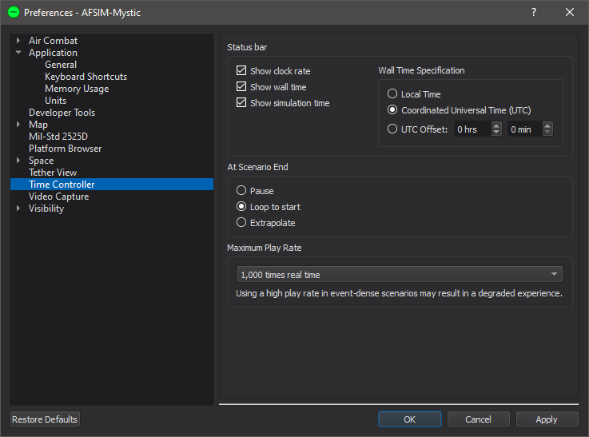

Time Controller - Mystic¶
The time controller allows users to traverse through a scenario’s historical data.
The grayed region shows what is currently in memory. Only a portion of the scenario may be loaded to maintain performance.
The icons on the left of the time controller are, in order:
{kind=link}
{kind=link}
{kind=link}
{kind=link}
{kind=link}
{kind=link}
The time controller also provides a mechanism for visualizing bookmarks, which are a special type of comment that correlates to a defined time. They may be added to the AER file via script. Each bookmark can have a defined type and message associated with it. The bookmarks are represented by a colored tick mark on the time controller. When applicable, hovering the mouse over a bookmark displays its type and message.
The icons to the right of the time controller are related to bookmarks:
Go to the next bookmark. If no bookmarks are available, jump to the end time.
Go to the previous bookmark. If no bookmarks are available, jump to the start time.
{kind=link}
{kind=link}
Note
Each of the toolbar options can also be triggered via a modifiable keyboard shortcut.
Note
Bookmark traversal can also be controlled through the Bookmark Browser.
The time controller adds display-rate, calendar-time, and sim-time to the status bar.
Preferences¶
From the time controller preferences, the user may set time for:
Pause - Pause at the event file’s end.
Looped to start - When checked, the display will return to time 0 and continue playing upon hitting the end of the event file.
Extrapolate - When checked, the display will extrapolate at real-time upon hitting the end of the event file. This is useful for real-time simulations.
The time controller preferences also allows the user to set the maximum settable play rate (the play rate is set using the button). The two options are 1000x and 10,000x real-time speed.
Note
No matter which maximum settable play rate is chosen, there are same number of play rate gradations. Thus choosing the higher value will lead to fewer available play rate choices for smaller play rates.
Warning
Using a high play rate in event-dense scenarios may result in a degraded experience.